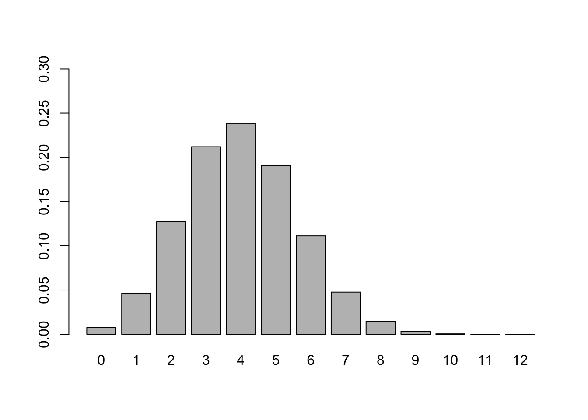

Chapter 2 Hypothesis Testing
2.1 Rock-Paper-Scissors
# This example illustrate how to find the binomial distribution of the Rock-Paper-Scissors example
numberTrial <- 100
parameter <- 1/2
probability <- function(n, x) {
factorial(n) / factorial(n-x) / factorial(x)*(parameter)^x*(1-parameter)^(n-x)
}
# create a dataframe for saving the probability of different number of scissors thrown out of 12 times under the null hypothesis
distvector <- vector('numeric',length = 101)
for (i in 0:100){
distvector[i+1] <- probability(100,i)
}
dis <- as.data.frame(cbind(seq(0,100),distvector))
dis## V1 distvector
## 1 0 7.888609e-31
## 2 1 7.888609e-29
## 3 2 3.904861e-27
## 4 3 1.275588e-25
## 5 4 3.093301e-24
## 6 5 5.939138e-23
## 7 6 9.403635e-22
## 8 7 1.262774e-20
## 9 8 1.467975e-19
## 10 9 1.500596e-18
## 11 10 1.365543e-17
## 12 11 1.117262e-16
## 13 12 8.286361e-16
## 14 13 5.609229e-15
## 15 14 3.485735e-14
## 16 15 1.998488e-13
## 17 16 1.061697e-12
## 18 17 5.246031e-12
## 19 18 2.419003e-11
## 20 19 1.043991e-10
## 21 20 4.228163e-10
## 22 21 1.610729e-09
## 23 22 5.783981e-09
## 24 23 1.961524e-08
## 25 24 6.293223e-08
## 26 25 1.913140e-07
## 27 26 5.518672e-07
## 28 27 1.512525e-06
## 29 28 3.943369e-06
## 30 29 9.790433e-06
## 31 30 2.317069e-05
## 32 31 5.232091e-05
## 33 32 1.128170e-04
## 34 33 2.324713e-04
## 35 34 4.581053e-04
## 36 35 8.638557e-04
## 37 36 1.559739e-03
## 38 37 2.697928e-03
## 39 38 4.472880e-03
## 40 39 7.110732e-03
## 41 40 1.084387e-02
## 42 41 1.586907e-02
## 43 42 2.229227e-02
## 44 43 3.006864e-02
## 45 44 3.895256e-02
## 46 45 4.847430e-02
## 47 46 5.795840e-02
## 48 47 6.659050e-02
## 49 48 7.352701e-02
## 50 49 7.802866e-02
## 51 50 7.958924e-02
## 52 51 7.802866e-02
## 53 52 7.352701e-02
## 54 53 6.659050e-02
## 55 54 5.795840e-02
## 56 55 4.847430e-02
## 57 56 3.895256e-02
## 58 57 3.006864e-02
## 59 58 2.229227e-02
## 60 59 1.586907e-02
## 61 60 1.084387e-02
## 62 61 7.110732e-03
## 63 62 4.472880e-03
## 64 63 2.697928e-03
## 65 64 1.559739e-03
## 66 65 8.638557e-04
## 67 66 4.581053e-04
## 68 67 2.324713e-04
## 69 68 1.128170e-04
## 70 69 5.232091e-05
## 71 70 2.317069e-05
## 72 71 9.790433e-06
## 73 72 3.943369e-06
## 74 73 1.512525e-06
## 75 74 5.518672e-07
## 76 75 1.913140e-07
## 77 76 6.293223e-08
## 78 77 1.961524e-08
## 79 78 5.783981e-09
## 80 79 1.610729e-09
## 81 80 4.228163e-10
## 82 81 1.043991e-10
## 83 82 2.419003e-11
## 84 83 5.246031e-12
## 85 84 1.061697e-12
## 86 85 1.998488e-13
## 87 86 3.485735e-14
## 88 87 5.609229e-15
## 89 88 8.286361e-16
## 90 89 1.117262e-16
## 91 90 1.365543e-17
## 92 91 1.500596e-18
## 93 92 1.467975e-19
## 94 93 1.262774e-20
## 95 94 9.403635e-22
## 96 95 5.939138e-23
## 97 96 3.093301e-24
## 98 97 1.275588e-25
## 99 98 3.904861e-27
## 100 99 7.888609e-29
## 101 100 7.888609e-31# Plot the distribution of getting number of heads from flipping a coin 10 times
barplot(dis$distvector,ylim=c(0,0.1),names.arg = dis$V1)